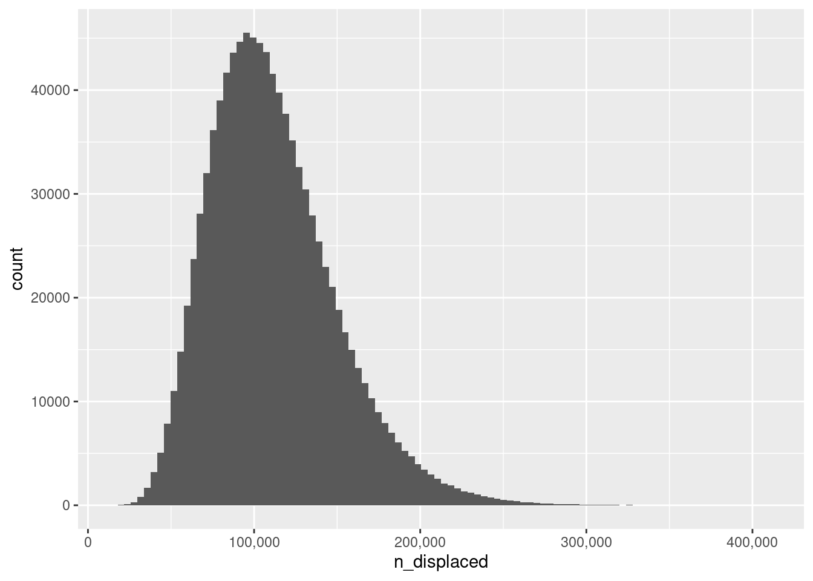

![]()
qbeta(c(.025, .975), 14, 154)[1] 0.0465905 0.1294375June 15, 2023
As a rule, I don’t do politics on this blog. In fact, I have never previously discussed political or social issues on this blog. I’ve scrupulously avoided discussing anything that might carry the hint of politics, because I don’t wish to be drawn into the fray. I’m a data scientist, a statistician, and a generative artist. I do not have the temperament required to involve myself in matters political, and it is fundamentally not what I wish to be doing with this blog. However, sometimes exceptions need to be made, and this post is one such exception.
One of the feeds I follow fairly regularly is Erin in the Morning, a substack written by Erin Reed. Erin is an activist and independent journalist who writes about transgender issues, and one of the few people who diligently attempts to document the full scope of the anti-trans laws that are currently being passed across large swathes of the United States, and the consequences that those laws are having on transgender people who live there. It’s grim reading.
A couple of days ago she published a very depressing post entitled US internal refugee crisis: 130-260k trans people have already fled, documenting the scale of the crisis currently affecting trans people in the US, and presenting personalised accounts from people who have been forced to leave their lives behind and flee to safer territory. A staggeringly large number of trans people have been internally displaced. They are so frightened by what is happening right now that they have upended their lives and moved in the hope of finding safety.
If you haven’t read the article yet, read it first… I’ll wait.
Okay, you’ve read it now, right? Good.
At this point, if you’re a statistician (or any other data-focused person) you have one of two reactions. If you’re a decent human being, your reaction will be something like this:
Fucking fuck fuck fuck this is horrible. What can I do to help?
Unfortunately, many statisticians will have this reaction:
That’s not how you should construct the estimate. Those numbers aren’t quite right, and probably an overestimate. So instead of being a decent human being I’m going to be a smug asshole, shove my head back in the sand, and ignore the very real crisis unfolding.
Admittedly the second group would probably choose to phrase their reaction differently, because they don’t want to admit that statistical pedantry is not an appropriate response to a catastrophic situation. Nevertheless, I’ve met statisticians before. We all have. We know perfectly well that pedantry is precisely what many of them will resort to when presented with an article like this one.
And so, in order to cut that off at the pass and do my best to forestall anyone who might be tempted to dismiss the substance of Erin’s point by nitpicking the statistics I’m going to redo her calculations in a somewhat more statistically careful way, and you can decide for yourself whether you want to be an asshole about it.
The data source is this article by Data For Progress.
From the pdf report embedded at the bottom of the page, the point estimate suggests 8% of transgender adults (defined here as people aged 18+) in the United States have been forced to migrate interstate. However, the weighted N associated with that point estimate is only 166, because sampling transgender people is hard. We don’t have any more detailed breakdown to work with, but as a “back of the envelope” style calculation, I’ll treat this as if it were a simple random sample in which 13 of 166 transgender adults indicated that they have already been forced to move interstate because of the current crisis. To the extent that this is a reasonable first-pass approximation, a simple beta-binomial model will suffice to provide an uncertainty estimate:
\[ \begin{array}{rcl} \theta & \sim & \mbox{Beta}(1, 1) \\ n & \sim & \mbox{Binomial}(\theta, N = 166) \end{array} \]
Given \(n = 13\) displaced people from a simple random sample of \(N = 166\) transgender people, the posterior proportion of displaced trans people is given by a Beta(14, 154) distribution.1 As such our 95% equal-tail credible interval is straightforwardly calculated as follows:
In other words, the data from this survey suggest that somewhere between 5% and 13% of all transgender adults in the United States have been internally displaced as a consequence of the deluge of anti-trans legislation in the last few years.2 How many people is that, really? To answer that question we need to know something about how many trans people there are in the United States.
For this we can use a relatively recent survey by the Williams Institute. The webpage provides point estimates in a digestible form, but Tables 4 and A4 of the associated pdf report includes a 95% credible interval that suggests the adult transgender population in the United States (where again age 18+ is used as the cutoff) is somewhere between 816,644 and 1,964,330 people. Or, to express it as a percentage, somewhere between 0.32% and 0.77% of the US adult population of 255,201,250 persons identifies as transgender (the point estimate is 0.52%).
In my ideal world I’d have access to the actual posterior distribution from the Williams Institute modelling, but alas I do not. However, since this is intended as a back-of-the-envelope style calculation, I’ll again try to make some sensible assumptions. In most situations I’d be willing to assume that the posterior is approximately normal, but that doesn’t work here because the percentages are too close to zero. Instead what I’ll do is use a beta distribution and choose parameters that ensure the relevant quantiles approximately mirror the numbers from the Williams Institute study:3
It’s awfully crude, but it works: the 95% equal-tail intervals that you’d get if this were the real posterior match the numbers reported by the Williams Institute, the distribution is bounded appropriately, and the point estimate (in this case the median) is pretty decent too. Good enough for the back of an envelope calculation I’d say.
Okay, now I have some (slightly crude) posterior densities to express what we know about (a) the proportion of adults in the United States are transgender, and (b) the proportion of transgender adults in the United States that have been displaced courtesy of the anti-trans legislation sweeping the nation. Again using the numbers from the Williams Institute study as the basis for the calculation, I’ll assume that the adult population of the US is approximately 255,201,250 persons. Now, I personally don’t know how to convolve two beta distributions analytically, but it’s not even slightly hard to do numerically:
Having done so, we can plot a distribution reflecting what we know about the number of transgender adults who have been displaced:
library(ggplot2)
ggplot(sim, aes(n_displaced)) +
geom_histogram(bins = 100) +
scale_x_continuous(labels = scales::label_comma())
So… how many transgender people within the United States do we estimate have already been forced from their homes as a consequence of the dire political climate there? Here’s the headline number:
About 111000 people. That’s… a lot, and that number doesn’t even include the families of transgender adults, or transgender children, or the families of transgender children. I mean, there aren’t many of us. We are a small population, and this is a humanitarian disaster for transgender people in the United States. It’s something that has been building for several years now, and every trans person knows it.
The precise scale of the disaster isn’t entirely clear from the data. The point estimate of 111k people could be out by a factor of 2 in either direction, which you can see by calculating the 95% credible interval:
Between 52000 and 199000 transgender adults have been displaced. No matter how you look at it, a lot of people have been forced to flee already.
At some point the rest of the American population will start to actually do something about this, right? I mean, something other than make it worse or waste your time and effort by whining about the threat to society posed by trans women in sports and asking “what is a woman?”.
Huge thank you to Martin Modrák for noticing the mistake in which I’d originally specified a Beta(14, 167) distribution here like an idiot.↩︎
You could do the same thing in a frequentist way, of course, but that would be no less crude than this Bayesian method, and anyway I already did that and found essentially the same answer. This isn’t a situation where Bayes-vs-orthodox matters very much. In the real world, the nuance is entirely around the SRS assumption and the accuracy of the responses. In that respect I’m of course oversimplifying, but let’s be honest… how much do you really think this would change things? Be honest.↩︎
The original version of this post used hand tuned parameter values because I had a brain fade and forgot that it’s absurdly easy to find least squares estimates with optim().↩︎
@online{navarro2023,
author = {Navarro, Danielle},
title = {On Living in Dark Times},
date = {2023-06-15},
url = {https://blog.djnavarro.net/posts/2023-06-15_dark-times},
langid = {en}
}